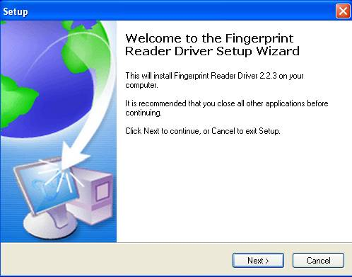
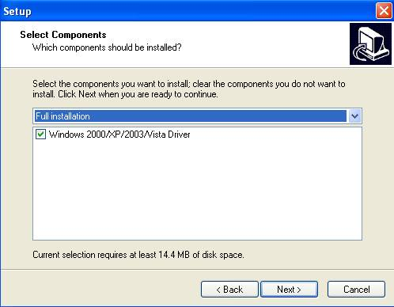
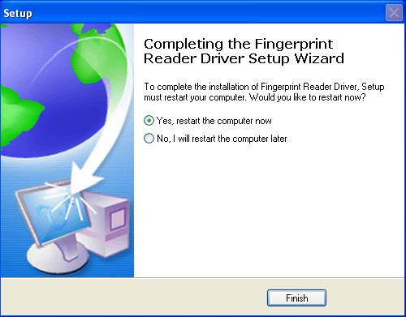

Fingerprint Sensor Driver Installation
Please install on-line fingerprint sensor driver if you want to enroll fingerprint through the system.
1.If the 4000 or previous version driver (Biokey200/ URU4000/ URU40000B) have been installed before, you must uninstall it first, the operation steps as below:
(1) Run "Add/Delete program" in control panel, uninstall fingerprint sensor driver;
(2) Run "Regedit.exe" in "Run" on the Starting menu, and delete the key values of HKEY_LOCAL_MACHINE\Software\DigitalPersona, if the value exists;
(3) Delete all "DP*.dll" under the directory of windows\system32 (windows\system in win98);
(4) Delete the folder "biokey200" under the directory of Program files\zksoftware, if the folder exists.
Restart your computer after uninstalling, then install on-line fingerprint sensor driver.
2. When you setup the software, system will suggest you install the driver. If you didn't install the driver at begginning, install the driver directly, the installation procedure as follows.
Click here to download fingerprint driver!
(1) Double click "Setup.exe" under the [Driver] folder to install the fingerprint sensor driver. The following interface appears, and then click on [Next].

(2) This interface will inquire you to select components to install, we recommend to select them all, then click on [Next], enter the next step;

(3) The fingerprint sensor driver start installing, when the process is completed, the dialog box will inquire you to restart the computer now or later. The driver will work when the computer restarted;

3. Attentions.
(1) When you are using Win7 os, if you don't open the browser as an administrator, you may fail to register the fingerprint.Add the website of the server to the area will avoid this problem:
Open the IE browser, enter [Internet Options]-[Security]-[Trusted sites], add the website to the area.